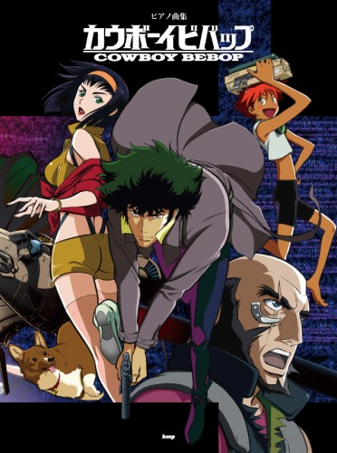
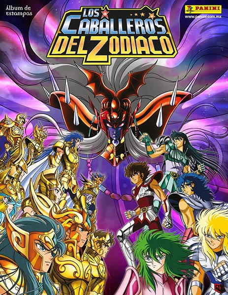

Cowboy Bebop
Ficha y sinopsis
Título: Cowboy Bebop
Género: Acción, Comedia, Drama, Sci-fi
Demografía: Seinen
Capítulos: 26
Estudio: Sunrise
Año de emisión: 1998
Cowboy Bebop es una historia de cowboys en el espacio. Los protagonistas son un grupo de cazarrecompensas que se gana la vida capturando a forajidos y cobrando el dinero de su recompensa al entregarlos mientras surcan los cielos con la Bebop, su nave. Dentro de la tripulación están Spike, Spiegel, el héroe principal sobre el que se enmarca más la historia, Jet Black, un grandote serio con un brazo metálico y dueño de la Bebop, Faye Valentine, la “tia buena” del grupo y la que aporta quebraderos de cabeza al resto del grupo, ya bien por sus derroches, o por sus antojos, Ed, una niña hacker super inteligente que además está un poco loca y genera comicidad a raudales, y Ein(o Strout en el doblaje español) un perro con una inteligencia superior. Conforme avanza la historia, veremos las alocadas aventuras de estos cinco, mientras se van tocando los pasados de la mayoría de miembros de la tripulación al ritmo de canciones de jazz compendiadas por la genial Yoko Kanno.
Ver Parasyte
Ver Portada

Seinto Seiya
Ficha y sinopsis
Título: Seinto Seiya
Género: Acción, Drama, Fantacia
Demografía: Shonen
Capítulos: 107
Estudio: Sunrise
Año de emisión: 1986
La serie se lleva a cabo en el mundo como lo conocemos pero se sabe de la leyenda que cuenta que existen los caballeros (o santos en el contexto original) guerreros con formidables habilidades físicas las cuales pueden golpear con la fuerza y velocidad de un rayo y cuya principal función es derrotar a las fuerzas del mal y proteger a la reencarnación de la diosa Athena en la tierra. Los caballeros aparte de tener la bendición de la diosa cuentan con la mejor de las armas a su disposición sus armaduras (Cloths) las cuales están basadas en alguna de las 88 constelaciones que existen en el firmamento, pero no es todo ya que en su interior se encuentra su carta ganadora, el cosmos esa energía que se encuentra dentro de nosotros y está ligada al universo. Pero contra toda fuerza del bien existe una en contra y en esta ocasión las reencarnaciones de otros dioses del Olimpo vienen a dominiar el mundo.
Ver Kimi no na wa
Ver Portada

Neon Genesis Evangelion
Ficha y sinopsis
Título: Neon Genesis Evangelio
Género: Acción, Ciencia Ficción, Psicológico, Drama, Mecha
Demografia: Shōnen, Seinen
Capítulos: 26
Estudio: Gainax, Tatsunoko Production
Año de emisión: 1995
El 13 de septiembre del año 2000 un enorme meteorito cayó en la Tierra derritiendo el Polo Sur y arrasando con todas las ciudades costeras, las cuales acabaron siendo destruidas. Este fenómeno fue conocido como el Segundo Impacto, ya que el Primer Impacto fue el que supuso la extinción de los dinosaurios. En el año 2015 aparece un misterioso y extraño ser gigante ataca la ciudad de Tokyo-3 y una organización llamada NERV decide desarrollar una serie de robots gigantes llamados EVA, que se utilizarán para enfrentarse al enemigo y derrotarlo. Sin embargo, los EVA tienen una particularidad y es que sólo pueden ser pilotados por jóvenes de 14 años que cumplan cuenten con unas características no muy definidas.Hacía mucho tiempo que no veía un anime tan enrevesado como lo es Neon Genesis Evangelion y me quedo corta diciendo que sólo es enrevesado. La verdad es que antes de ver este anime me esperaba una mera historia de robots, con muchas peleas, tres niños que tienen que salvar al mundo y ya está pero Evangelion va mucho más allá de eso.
Ver Kuzu no Honkai
Ver Portada
DRAGON BALL Z
Ficha y sinopsis
Título: DRAGON BALL Z
Género: Acción, Aventura, Comedia, Fantástico, Ciencia Ficción, Drama
Demografia: Shōnen
Capítulos: 275
Estudio: Toei Animation
Año de emisión: 1989
Dragon Ball Z es la continuación de la serie anime/manga Dragon Ball. En este caso se narra la aventura de la vida adulta de Son Gokū. Al mismo tiempo, también, se narra la madurez de su hijo, Gohan. El cambio entre las series es significativa, ya que en esta versión de la historia, lo cómico y el tono de aventuras que tenía la serie anterior, es relativamente dejada de lado para mostrar una historia con un toque más oscuro y serio.Comienza con el viaje de Bulma, Gohan y Krilin hacia el Planeta Namek y también la llegada de Vegeta a ese planeta. Continúa con la lucha contra los soldados de Freezer, como Dodoria, Zarbon, etc. El combate contra Las Fuerzas Especiales Ginyu, la llegada de Gokū y la pelea final contra Freezer. La Saga finaliza con la resurrección de los Guerreros Z asesinados anteriormente a mano de los Saiyajin.
Ver Maquia
Ver Portada